01 · 03 · 08을 기본 흐름으로
폴더 지도 → 파일 선택 → 작은 고정 패널. 일상적인 작업을 방해하지 않는 것이 우선입니다.
Transparent desktop companion · 12 scenes · 2026.11.03
CLI로 만든 프로젝트를 열면 어떤 파일이 무엇과 연결되어 있는지 보여주는 투명 패널. 같은 디자인 언어 안에서 12가지 사용 장면을 비교합니다.
가칭 Depth Lensbuilt-in image_gen모두 생성 레퍼런스이 이미지는 실행 중인 새 프로그램의 스크린샷이 아닙니다. 폴더 자동 인식·투명 창·클릭 통과·관계 갱신은 앞으로 구현·검증할 기능입니다. 배경의 에디터 코드와 OS 시간은 시각 예시이며, 정확한 소스 분석 결과가 아닙니다.
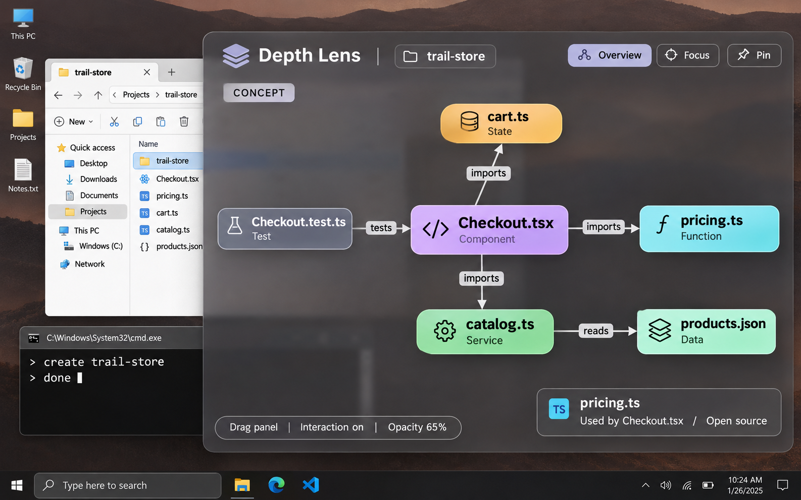
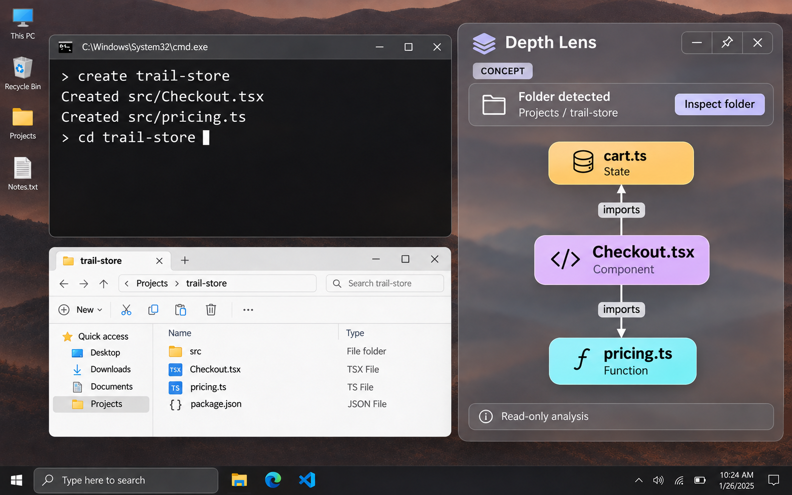
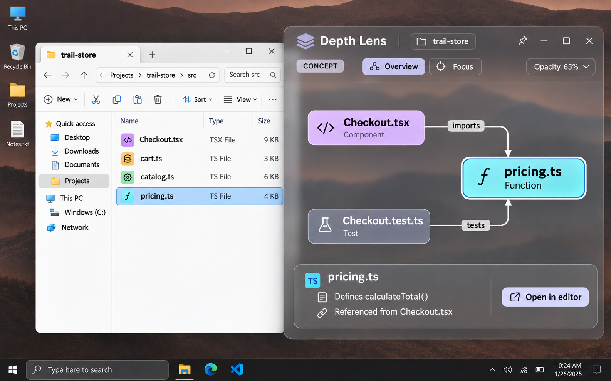
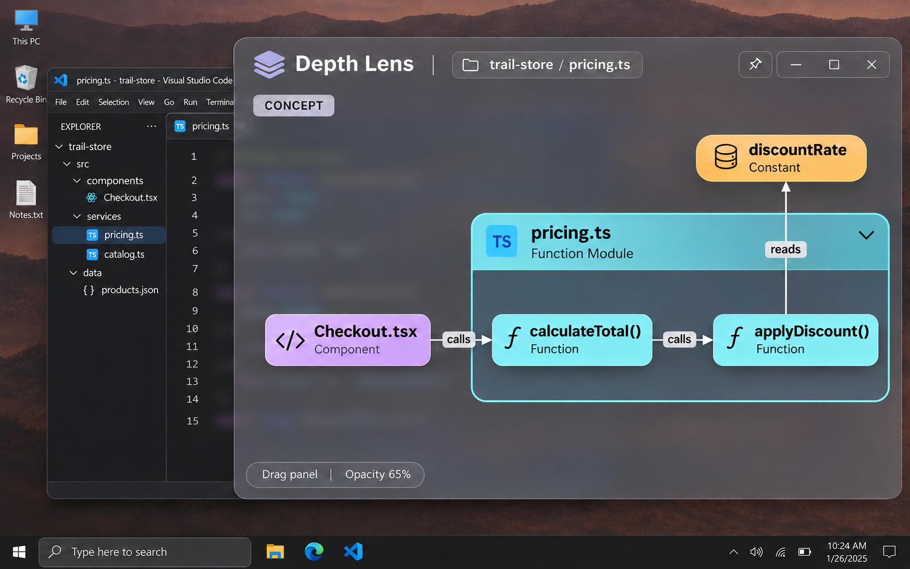
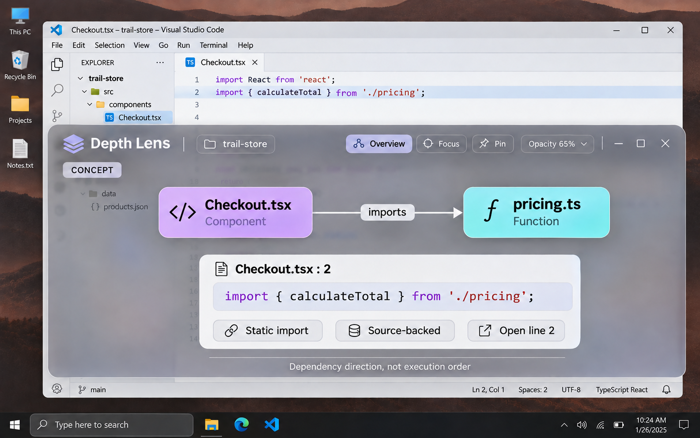
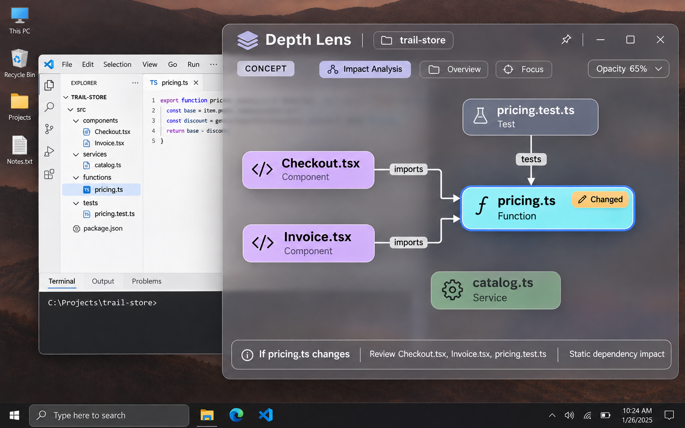
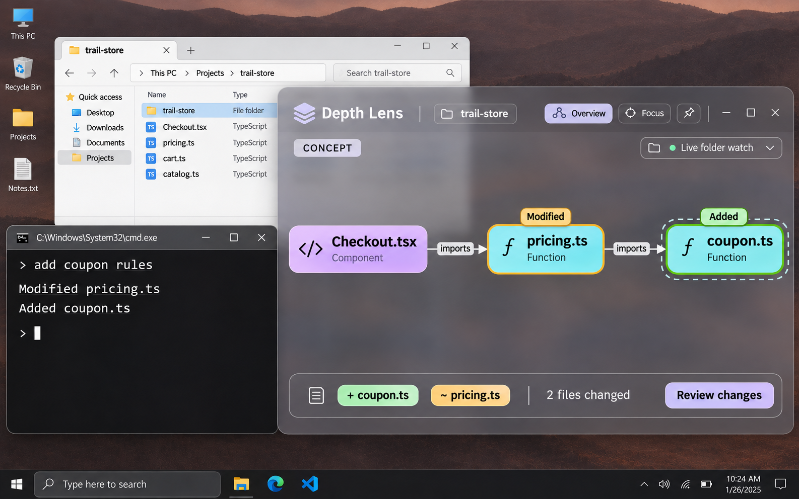
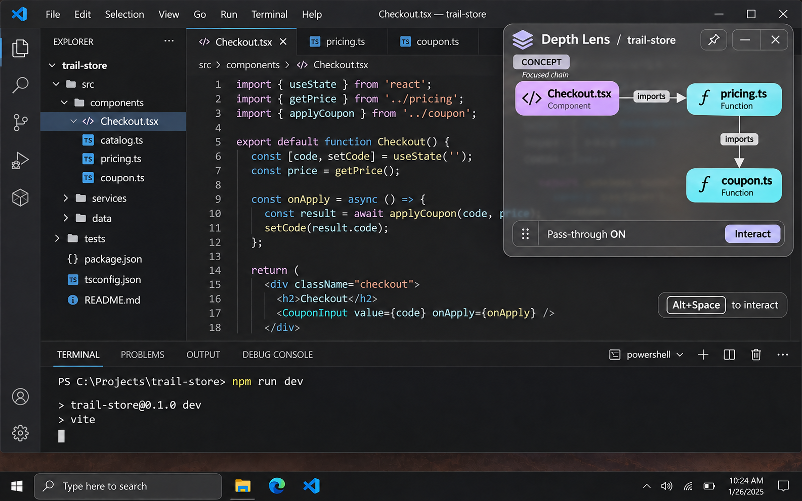
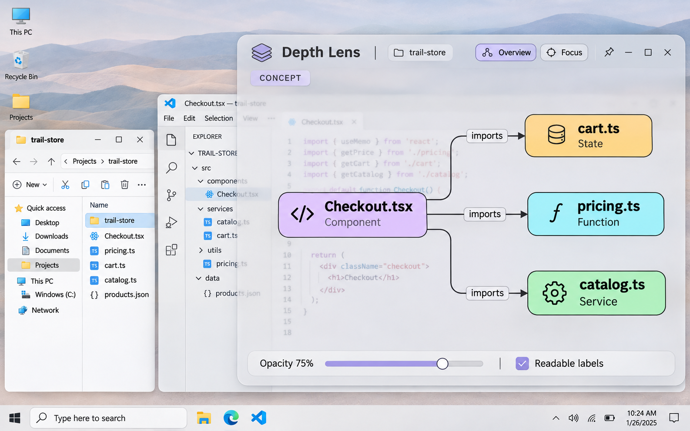
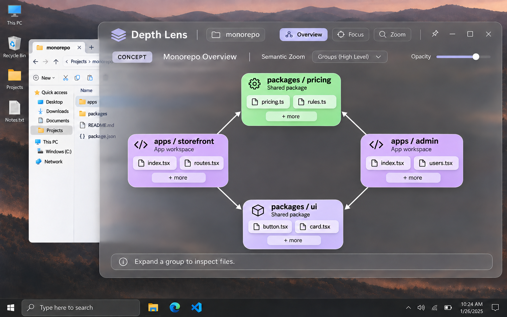
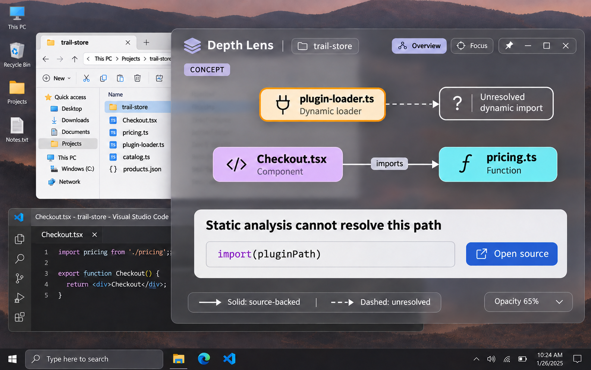
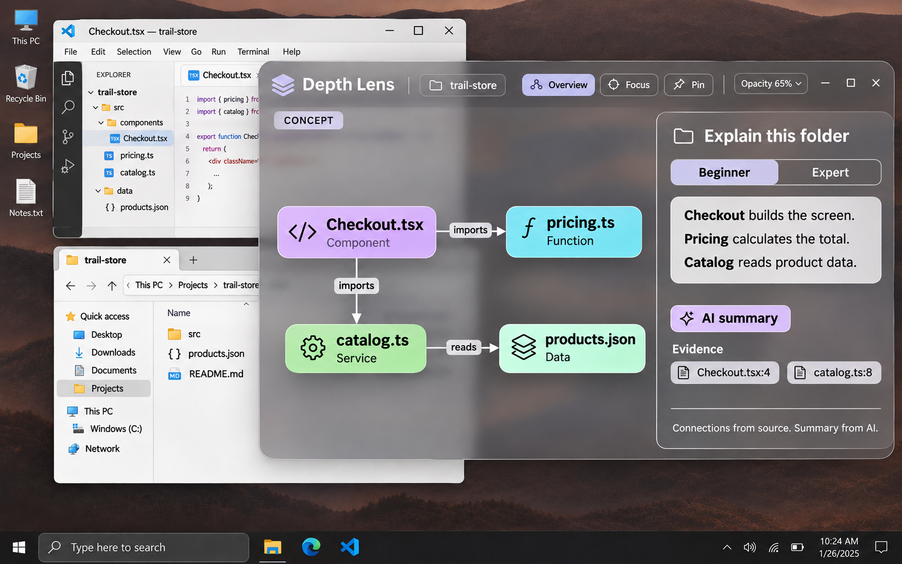
폴더 지도 → 파일 선택 → 작은 고정 패널. 일상적인 작업을 방해하지 않는 것이 우선입니다.
모듈 내부, 연결 근거, 변경 영향을 같은 시각 규칙으로 설명합니다. 선을 누를 때 소스를 확인할 수 있어야 합니다.
갱신, 규모, 불확실성은 기본 동작입니다. 모르는 것은 표시하고, 큰 구조는 묶어서 보여줍니다.
밝은 배경의 가독성과 사용자 수준에 맞는 설명. AI 설명은 근거와 함께 별도로 표시합니다.
교정: 04 참조 화살표 방향, 05 줄 번호, 08 모듈 역할, 10 패키지 관계와 분류, 11 동적 로더 분류. 이미지의 선·글자를 데이터 계약으로 복사하지 않습니다. 프롬프트와 최종 파일 해시는 함께 보관했습니다.